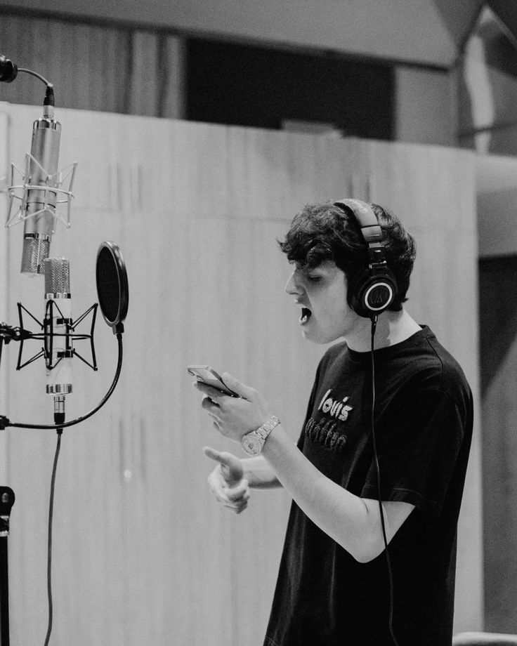

Información sobre Gabito Ballesteros
Gabito Ballesteros es un joven artista originario de Sonora, México, que ha destacado en el mundo de los corridos tumbados. Con su estilo relajado, letras pegajosas y colaboraciones con grandes exponentes del género como Natanael Cano, Peso Pluma y Junior H, ha logrado conectar con una nueva generación de oyentes que buscan un sonido fresco y auténtico.
Álbumes destacados
- Del Barrio Hasta Aquí (2021)
- Corridos y Relax (2022)
- Éxitos Tumbados (2023)
Éxitos populares
- LOV3
- El Tsurito (ft. Peso Pluma)
- Aquí Seguimos
Galería
